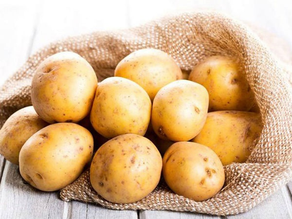
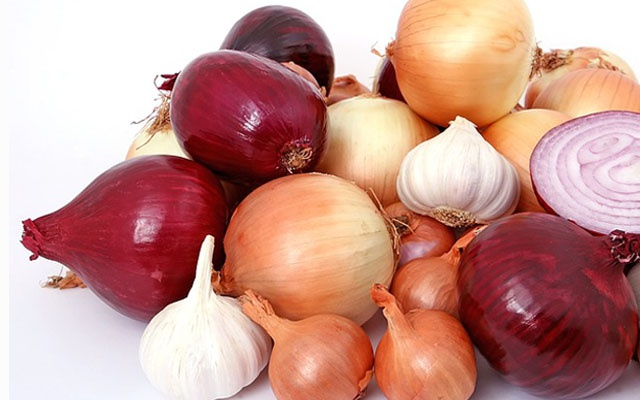
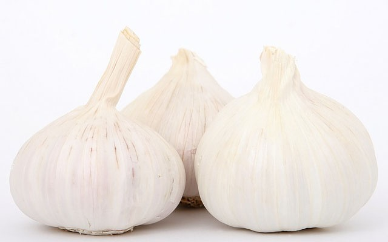
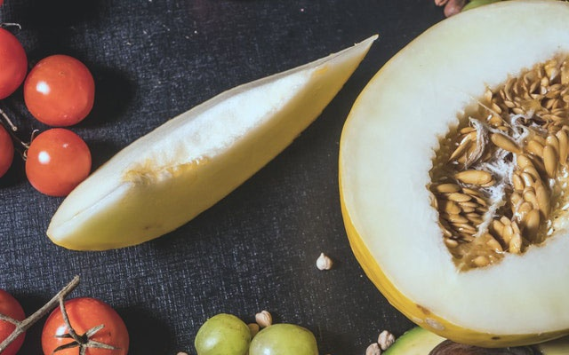
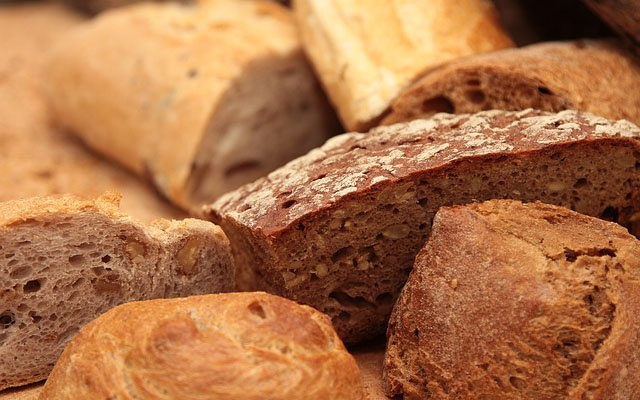
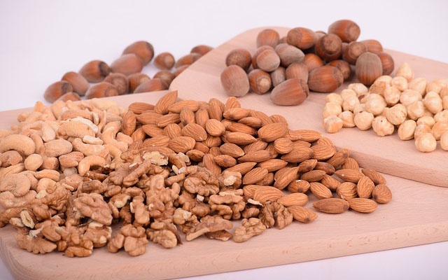

Những thực phẩm không nên bảo quản trong tủ lạnh
04-04-2020
Tủ lạnh thường là nơi bảo quản thức ăn, đồ uống của nhiều gia đình. Tuy nhiên, có một số loại thực phẩm không nên cất trữ trong tủ lạnh như khoai tây, hành, tỏi...
1. Khoai tây

Khoai tây được bảo quản tốt nhất ở nhiệt độ thường, không quá lạnh, quá nóng. Hơi lạnh ở tủ lạnh sẽ phá vỡ tinh bột có trong khoai tây, làm ảnh hưởng đến chất dinh dưỡng, hương vị của thực phẩm này.
2. Hành tây

Hành tây sẽ nhanh hỏng, dễ mốc khi bảo quản trong tủ lạnh. Tốt nhất bạn nên để hành tây nơi thoáng mát, tránh ánh sáng mặt trời trực tiếp. Khi hành tây đã qua bóc vỏ, bạn có thể cho vào túi chân không và đặt ở ngăn mát tủ lạnh.
3. Tỏi

Tỏi sẽ giảm bớt độ nồng, cay khi lưu trữ trong tủ lạnh. Bạn nên phơi tỏi ngoài trời nắng to để tỏi tránh ẩm, mốc. Sau đó, cho vào các túi nhỏ và bảo quản ở nhiệt độ phòng.
4. các loại dưa như dưa hấu, dưa lưới

Theo chuyên gia sức khỏe, các loại dưa như dưa hấu, dưa lưới... khi đặt trong tủ lạnh sẽ làm giảm hàm lượng chất oxy hóa. Do đó, bạn nên bảo quản dưa nguyên quả ở nhiệt độ phòng. Đối với dưa đã cắt, bạn có thể bảo quản trong tủ lạnh 3-4 ngày.
5. Bánh mì

Bánh mì là thực phẩm dễ hỏng. Bảo quản bánh mì trong tủ lạnh để ngăn chặn sự phát triển của nấm mốc là sai lầm. Bánh mì được lưu trữ tốt nhất trong các hộp đựng thức ăn khô, được hút chân không.
6. Các loại hạt như hạnh nhân, hạt dẻ, cà phê

Các loại hạt như hạnh nhân, hạt dẻ, cà phê.. bảo quản trong tủ lạnh sẽ mất đi hương vị thơm ngon bởi nó hấp thụ mùi của các thực phẩm khác trong ngăn mát. Bạn nên nướng hoặc rang các loại hạt, cho vào các hộp kín để tránh hạt bị mốc.
Tóm lại, các loại củ quả, hạt, trái cây nên được bảo quản ở hộp kín, nhiệt độ thường để duy trì kết cấu, hương vị. Tuy nhiên, việc làm lạnh thực phẩm được khuyến khích sau khi chúng được cắt hoặc nấu chín. Ngoài ra, bạn cũng nên vệ sinh tủ lạnh thường xuyên để thức ăn không bị bám mùi, mất đi hương vị vốn có.
Theo Bếp Roll tổng hợp